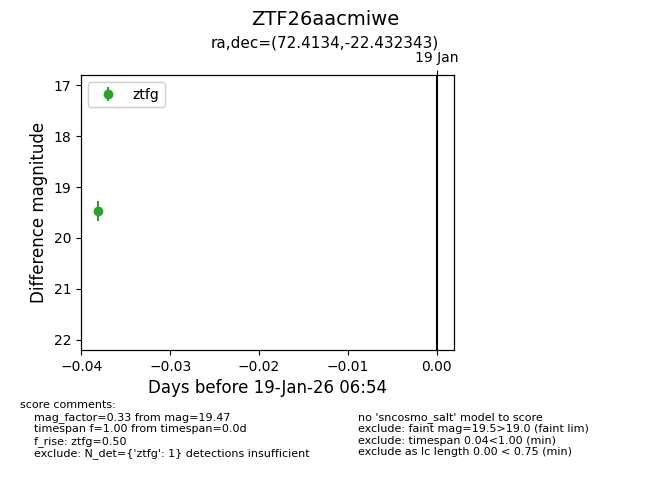
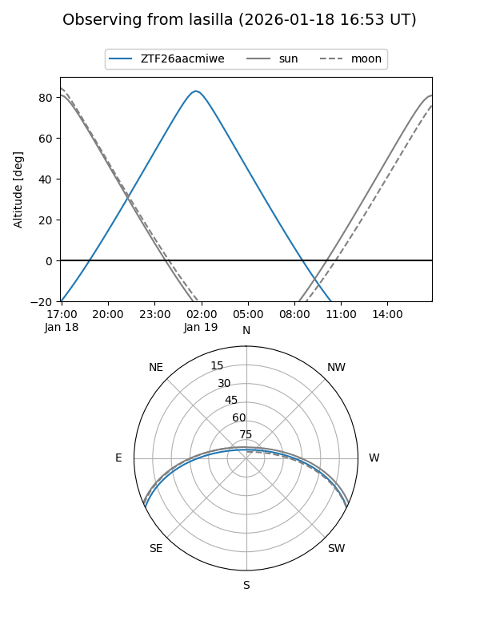
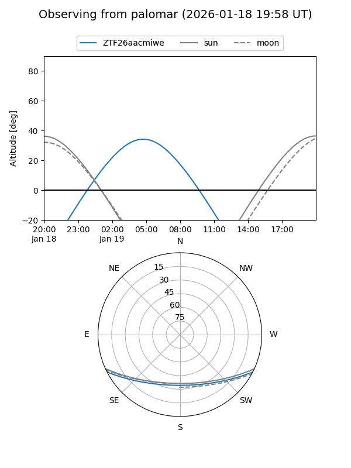

ZTF26aacmiwe
Target ZTF26aacmiwe at 2026-01-19 06:55
Aliases and brokers:
FINK: link
Lasair: link
ALeRCE: link
alt names
ZTF26aacmiwe (ztf,fink_ztf)
Coordinates:
equatorial (ra, dec) = 72.4134,-22.43234
equatorial (HMS+DMS) = 04:49:39.21,-22:25:56.44
galactic (l, b) = (221.9196,-36.21778)
Flags:
Photometry:
last ztfg=19.47
1 ztfg detections
Lightcurve

Visibility


Additional plots